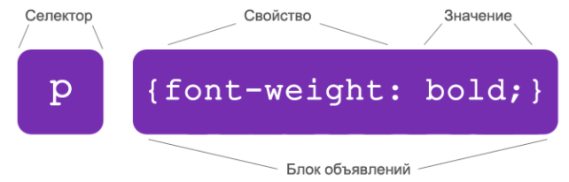
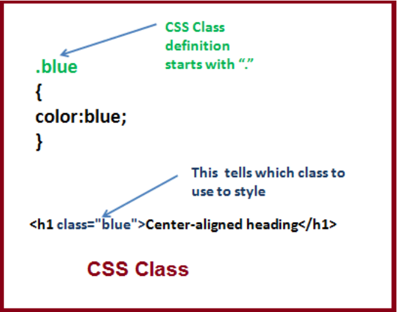
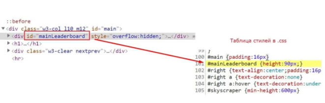
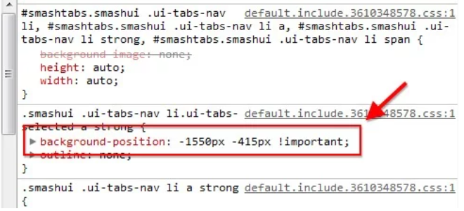

Класи (class) – це атрибути HTML-тегів. Для кожного класу потім можна прописати окремі CSS-стилі. Класи доволі гнучкі. Їх можно присвоїти різним тегам, причому декілька одночасно. До прикладу, один і той же клас можна призначити і для шапки, і для підвалу, і для сайдбару. Класи не є одиночними, не є закріпленими за конкретновизначеними стилями, вони були створені, щоби стилізувати різні групи. Присвоївши клас для якого-небудь тегу, його потім можна застосувати як селектор.
Що таке селектори, класита ідентифікатори в CSS ` `
Селектори – це елементи, до яких прив’язуються стилі. Існують різні типи селекторів, наприклад: селектори класів, тегів, ідентифікаторів, груп. Синтаксис селектора, зазвичай, виглядає так: спочатку вказується HTML-елемент, далі у фігурних дужках перелічуються стилі зі значеннями.


Ідентифікатори (ID) – це по-суті ті ж самі класи, але вони обов’язково мають бути унікальними, не можуть повторюватися, й за рахунок цього стоять вище класів, тобто мають більшу пріорітетність при застосовуванні. Ідентифікатори задаються аналогічно у вигляді атрибута тегу, а пізніше прописуються як селектори ідентифікатора. Синтаксис складається з решітки та назви, далі у фігурних дужках прописуються стилі зі значеннями.

Застосуівання ідентифікаторів на практиці та атрибут !important
Що ж, ми вже розглянули елементарну структуру CSS і знаємо як визначаються стилі. Давайте тепер розглянемо які задачі бувають на практиці і як ці знання нам реально допоможуть.
Одна із задач, яка наштовхнула мене до вивчення CSS – потрібно було змінити вирівнювання тексту (text-align) в певному блоці. Але цей стиль вже був прописаний в коді самої сторінки (так звані вбудовані inline-стилі з допомогою атрибута style). Я спробував стандартно прописати стилі в окремому css файлі, але нічого не змінилося, адже inline CSS мають більший пріоритет і просто перекривали задані мною стилі.
На допомогу у цій ситуації приходять якраз ідентифікатори (ID), котрі можна підчепити до будь-якого тегу чи елементу, а потім просто прописати у вигляді селектора та перевизначити (переприсвоїти) стилі.
Але часто навіть це не допомагає, особливо якщо у вас взагалі немає доступу до вихідного коду сторінки, або ви не знаєте де він лежить. Таким чином достатньо просто прописати нові стилі, але із маленькими хитрощами – застосувати декларацію !important. Це автоматично визначить найвищу пріоритетність для прописаного вами значення стилю:
